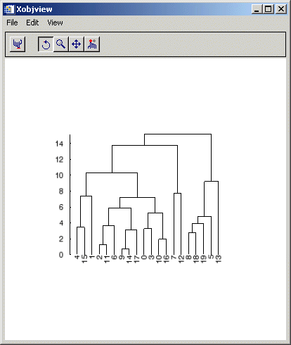

Given a hierarchical tree cluster, usually created by the CLUSTER_TREE function, the DENDROGRAM procedure constructs a dendrogram and returns a set of vertices and connectivity that can be used to visualize the dendrite plot.
This routine is written in the IDL language. Its source code can be found in the file dendro_plot.pro in the lib subdirectory of the IDL distribution.
DENDROGRAM, Clusters , Linkdistance , Outverts , Outconn [, LEAFNODES = variable ]
A 2-by-( m -1) input array containing the cluster indices, where m is the number of items in the original dataset. This array is usually the result of the CLUSTER_TREE function.
An ( m -1)-element input vector containing the distances between cluster items, as returned by the Linkdistance argument to the CLUSTER_TREE function.
Set this argument to a named variable that will contain a 2-dimensional array of floating-point vertices that make up the dendrogram.
Set this argument to a named variable that will contain an output array of connectivity values. The Outverts and Outconn arguments can be passed directly to IDLgrPolyline to construct the dendrite plot.
Set this keyword to a named variable that will return a vector of integers giving the order of leaf nodes within the dendrogram. The LEAFNODES keyword is useful for labeling the nodes in a dendrite plot.
; Given a set of points in two-dimensional space.
m = 20
DATA = 7*RANDOMN(-1, 2, m)
; Compute the Euclidean distance between each point.
distance = DISTANCE_MEASURE(data)
; Compute the cluster analysis.
clusters = CLUSTER_TREE(distance, linkdistance, LINKAGE=2)
; Create the dendrogram.
DENDROGRAM, clusters, linkdistance, outverts, outconn, $
LEAFNODES = LEAFNODES
PRINT, STRTRIM(LEAFNODES, 2)
OPOLY = OBJ_NEW('IDLgrPolyline', outverts, $
POLYLINES = outconn)
LOC = FLTARR(2, m)
LOC[0, *] = FINDGEN(m)
OTEXT = OBJ_NEW('IDLgrText', STRTRIM(LEAFNODES,2), $
ALIGNMENT = 1, VERTICAL_ALIGN = 0.5, $
BASELINE = [0,1,0], UPDIR = [-1,0,0], $
CHAR_DIM = [1,1], LOCATIONS = loc)
OAXIS = OBJ_NEW('IDLgrAxis', 1, /EXACT, $
LOCATION = [-1,0,0], RANGE = [0, MAX(linkdistance)])
OAXIS -> GetProperty, TICKTEXT = oTick
OTICK -> SetProperty, CHAR_DIM = [1,1]
OMODEL = OBJ_NEW('IDLgrModel')
OMODEL -> Add, oPoly
OMODEL -> Add, oText
OMODEL -> Add, oAxis
XOBJVIEW, oModel
When this code is run, IDL prints:
4 15 1 2 11 6 9 14 17 0 3 10 16 7 12 8 18 19 5 13
|
 |
|
6.1 |
Introduced |